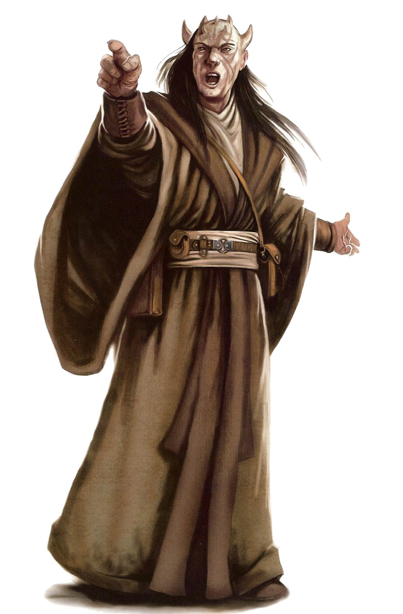

Zabrak
zabrak
Special Abilities: Zabrak begin the game with one rank in Survival. They still may not train Survival above rank 2 during character creation.
Fearsome Counterance: Zabrak add automatic [1 Advantage] to all Coercion checks they make.
Zabrak resemble humans in skin tone and physique, but they are easily distinguished by their vestigial horns. They are renowned for both their inherent confidence and their martial prowess.
Zabrak physiology is similar to human, with several notable differences, including the presence of a second heart and a heightened resistance to physical pain. Zabrak vestigial horns emerge at puberty; they are a sign that an individual is reaching maturation and nearing the age of the traditional rite of passage. Zabrak skin colors range from near-ivory through browns to near-black, in a broad range of tones. Some have hair, but many are completely bald. Eye colors include the common human range, but can also include yellow, red, and orange.
Upon completing the rite of passage, Zabrak adopt a pattern of facial tattoos. These are generally made up of a pattern of thin lines and elegant designs. They are often based on family tradition, but can also incorporate personal designs or representations associated with significant events.
Zabrak are renowned for their self-assurance and independent natures. The harsh conditions of their homeworld, Iridonia, led to a particularly competitive and warlike nature in its inhabitants. Thus, study in martial arts is common throughout Zabrak cultures. The bladed quarLerstaff—known as a zhaboka—is a culturally significant weapon to Zabrak; historically, Zabrak would wield zhabokas while riding reeks, their war mounts. The combination of determination and military prowess has made Zabrak culture extremely resistant to Imperial domination.
In concert with their militaristic tendencies, Zabrak have established a reputation as exceptional weaponsmiths. They craft both traditional melee weapons and reliable blasters. While none of these armaments are mass-produced, they can still be found throughout the galaxy (sometimes when Zabrak surreptitiously arm other oppressed species).
Zabrak are native to Iridonia, a world located in the Mid Rim. Because its environment is so hostile to life—conditions include brutal weather, acidic seas, and a host of predatory wildlife—many Zabrak were quick to embrace spacefaring and migrate to other worlds. Consequently, many Zabrak identify themselves with their colony world rather than the homeworld of their species. Zabrak colonies can now be found spread across the galaxy, from established colonies on major metropolitan worlds to enclaves in entirely unexpected locations, such as the mountain colonies found on Dathomir. The Dathomirian Zabrak emphasize their culture's warlike tendencies to the exclusion of all else, and tend to be even more violent and dangerous than their off-world kin.
The native language of Zabrak from Iridonia is Zabraki. However, because of their long association with broader galactic civilization, almost all Zabrak also speak Basic.
Even before the Zabrak mastered interstellar travel well enough to establish colonies, their civilization came into contact with the dark side of the Force. The ancient Sith hired numbers of Zabrak mercenaries to use within their armies. The Zabrak High Council profited tremendously from the mercenary contracts, and a degree of savagery that appealed to the Sith became an ingrained part of Zabrak martial culture. It has remained in place long after the Sith vanished.
Traditionally, Zabrak fought with a stylized quarterstaff called a zhaboka. Modern zhabokas are two meters long and feature a detachable central grip. Each end is a metal blade crafted from tempered durasteel. Zabrak learn to use a zhaboka afoot as well as while riding a reek war mount.